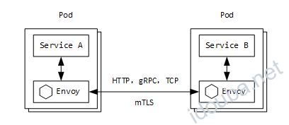
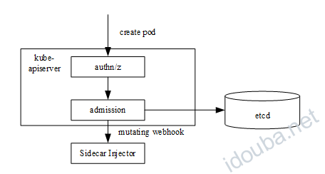

Sidecar Injector自动注入的原理 –《云原生服务网格Istio》书摘04
本节书摘来自华为云原生技术丛书《云原生服务网格Istio:原理,实践,架构与源码解析》一书原理篇的第6章透明的Sidecar机制，6.1.1小节Sidecar Injector自动注入的原理。更多内容参照原书，或者关注容器魔方公众号。
Sidecar注入
我们都知道，Istio的流量管理、策略、遥测等功能无须应用程序做任何改动，这种无侵入式的方式全部依赖于Sidecar。应用程序发送或者接收的流量都被Sidecar拦截，并由Sidecar进行认证、鉴权、策略执行及遥测数据上报等众多治理功能。
如图6-1所示，在Kubernetes中，Sidecar容器与应用容器共存于同一个Pod中，并且共享同一个Network Namespaces，因此Sidecar容器与应用容器共享同一个网络协议栈，这也是Sidecar能够通过iptables拦截应用进出口流量的根本原因。

图6-1 Istio的Sidecar模式
在Istio中进行Sidecar注入有两种方式：一种是通过istioctl命令行工具手动注入;另一种是通Istio Sidecar Injector自动注入。
这两种方式的最终目的都是在应用Pod中注入init容器及istio-proxy容器这两个Sidecar容器。如下所示，通过部署Istio的sleep应用，Sidecar是通过sidecar-injector自动注入的，查看注入的Sidecar容器：
（1）istio-proxy 容器：
- args: # istio-proxy 容器命令行参数
- proxy
- sidecar
- --domain
- $(POD_NAMESPACE).svc.cluster.local
- --configPath
- /etc/istio/proxy
- --binaryPath
- /usr/local/bin/envoy
- --serviceCluster
- sleep.default
- --drainDuration
- 45s
- --parentShutdownDuration
- 1m0s
- --discoveryAddress
- istio-pilot.istio-system:15011
- --zipkinAddress
- zipkin.istio-system:9411
- --connectTimeout
- 10s
- --proxyAdminPort
- "15000"
- --controlPlaneAuthPolicy
- MUTUAL_TLS
- --statusPort
- "15020"
- --applicationPorts
- ""
env: # istio-proxy 容器环境变量
- name: POD_NAME
valueFrom:
fieldRef:
apiVersion: v1
fieldPath: metadata.name
- name: POD_NAMESPACE
valueFrom:
fieldRef:
apiVersion: v1
fieldPath: metadata.namespace
- name: INSTANCE_IP
valueFrom:
fieldRef:
apiVersion: v1
fieldPath: status.podIP
- name: ISTIO_META_POD_NAME
valueFrom:
fieldRef:
apiVersion: v1
fieldPath: metadata.name
- name: ISTIO_META_CONFIG_NAMESPACE
valueFrom:
fieldRef:
apiVersion: v1
fieldPath: metadata.namespace
- name: ISTIO_META_INTERCEPTION_MODE
value: REDIRECT
- name: ISTIO_METAJSON_LABELS
value: |
{"app":"sleep","pod-template-hash":"7f59fddf5f"}
image: gcr.io/istio-release/proxyv2:release-1.1-20190124-15-51
imagePullPolicy: IfNotPresent
name: istio-proxy
……
volumeMounts: # istio-proxy挂载的证书及配置文件
- mountPath: /etc/istio/proxy
name: istio-envoy
- mountPath: /etc/certs/
name: istio-certs
readOnly: true
- mountPath: /var/run/secrets/kubernetes.io/serviceaccount
name: sleep-token-266l9
readOnly: true
（2）istio-init容器：
initContainers: # istio-init容器，用于初始化Pod网络
- args:
- -p
- "15001"
- -u
- "1337"
- -m
- REDIRECT
- -i
- '*'
- -x
- ""
- -b
- ""
- -d
- "15020"
image: gcr.io/istio-release/proxy_init:release-1.1-20190124-15-51
imagePullPolicy: IfNotPresent
name: istio-init
……
securityContext:
capabilities:
add:
- NET_ADMIN
procMount: Default
Sidecar Injector自动注入的原理
Sidecar Injector是Istio中实现自动注入Sidecar的组件，它是以Kubernetes准入控制器Admission Controller的形式运行的。Admission Controller的基本工作原理是拦截Kube-apiserver的请求，在对象持久化之前、认证鉴权之后进行拦截。Admission Controller有两种：一种是内置的，另一种是用户自定义的。Kubernetes允许用户以Webhook的方式自定义准入控制器，Sidecar Injector就是这样一种特殊的MutatingAdmissionWebhook。
如图6-2所示，Sidecar Injector只在创建Pod时进行Sidecar容器注入，在Pod的创建请求到达Kube-apiserver后，首先进行认证鉴权，然后在准入控制阶段，Kube-apiserver以REST的方式同步调用Sidecar Injector Webhook服务进行init与istio-proxy容器的注入，最后将Pod对象持久化存储到etcd中。

图6-2 Sidecar Injector的工作原理
Sidecar Injector可以通过MutatingWebhookConfiguration API动态配置生效，Istio中的MutatingWebhook配置如下：
apiVersion: admissionregistration.k8s.io/v1beta1
kind: MutatingWebhookConfiguration
metadata:
creationTimestamp: "2019-02-12T06:00:51Z"
generation: 4
labels:
app: sidecarInjectorWebhook
chart: sidecarInjectorWebhook
heritage: Tiller
release: istio
name: istio-sidecar-injector
resourceVersion: "2974010"
selfLink: /apis/admissionregistration.k8s.io/v1beta1/mutatingwebhookconfigurations/istio-sidecar-injector
uid: 8d62addb-2e8b-11e9-b464-fa163ed0737f
webhooks:
- clientConfig:
caBundle: ……
service:
name: istio-sidecar-injector
namespace: istio-system
path: /inject
failurePolicy: Fail
name: sidecar-injector.istio.io
namespaceSelector:
matchLabels:
istio-injection: enabled
rules:
- apiGroups:
- ""
apiVersions:
- v1
operations:
- CREATE
resources:
- pods
sideEffects: Unknown
从以上配置可知，Sidecar Injector只对标签匹配“istio-injection: enabled”的命名空间下的Pod资源对象的创建生效。Webhook服务的访问路径为“/inject”，地址及访问凭证等都在clientConfig字段下进行配置。
Istio Sidecar Injector组件是由sidecar-injector进程实现的，本书在之后将二者视为同一概念。Sidecar Injector的实现主要由两部分组成：
- 维护MutatingWebhookConfiguration；
- 启动Webhook Server，为应用工作负载自动注入Sidecar容器。
MutatingWebhookConfiguration对象的维护主要指监听本地证书的变化及Kubernetes MutatingWebhookConfiguration资源的变化，以检查CA证书或者CA数据是否有更新，并且在本地CA证书与MutatingWebhookConfiguration中的CA证书不一致时，自动更新MutatingWebhookConfiguration对象。